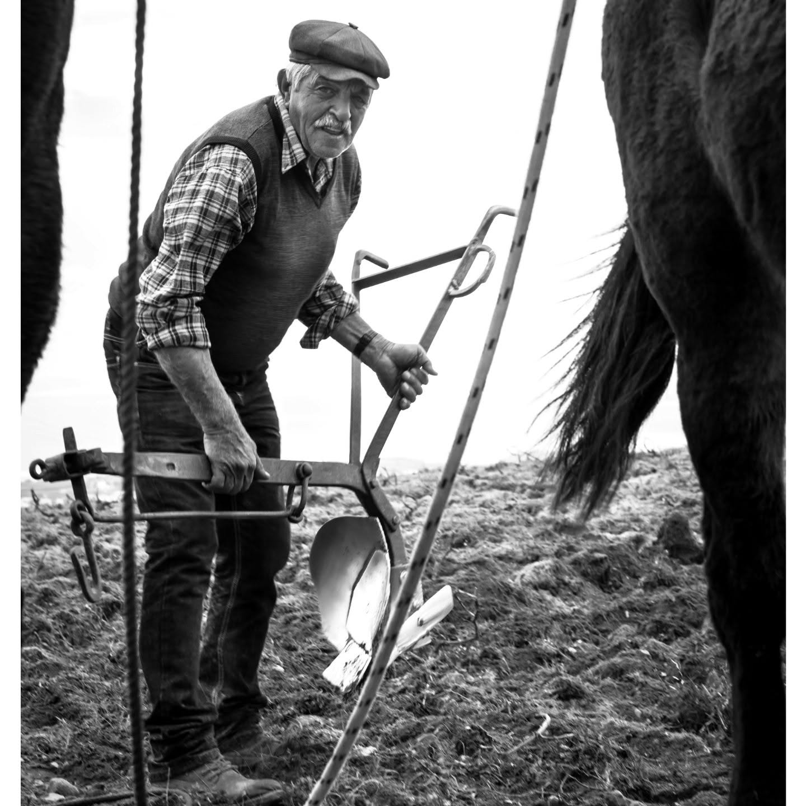
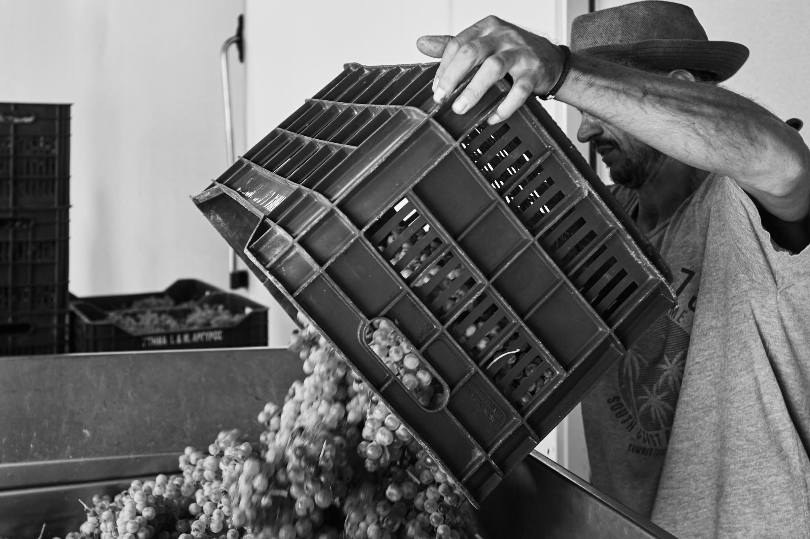

The art and science of volcanic viticulture in Santorini.
Tap to Explore
Unlocking the unique mineral profile born from ancient eruptions and sea winds.
Tap to Discover
“The wine is made in the vineyard, perfected in the cellar.”


From ancient basket-pruned vines to meticulous cellar maturation.
Tap to Read More